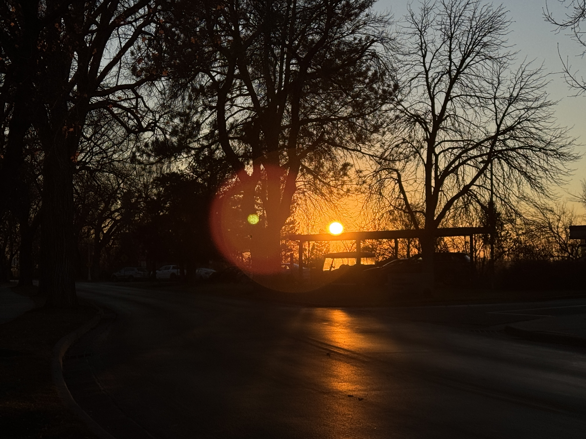
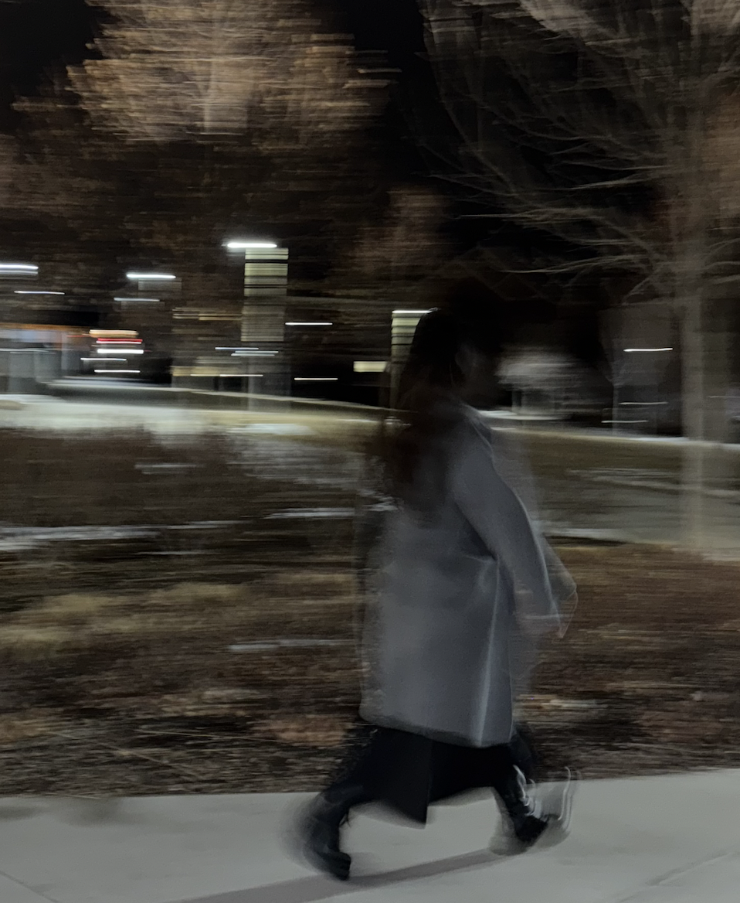
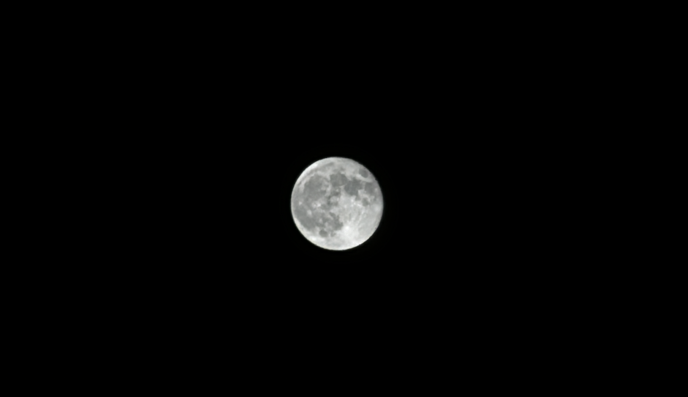
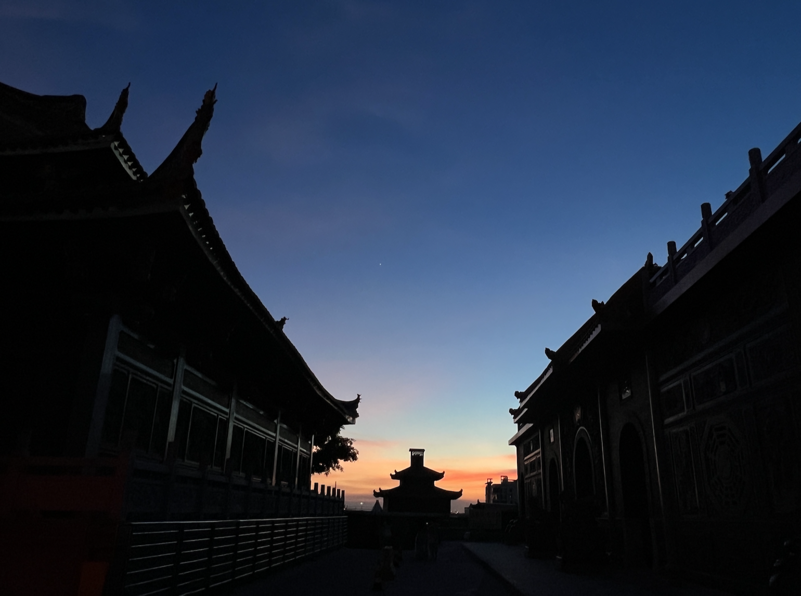
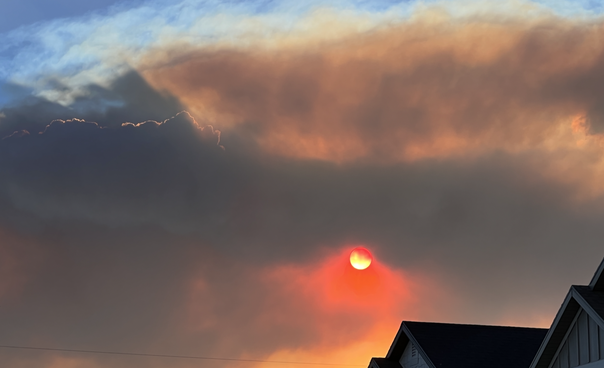
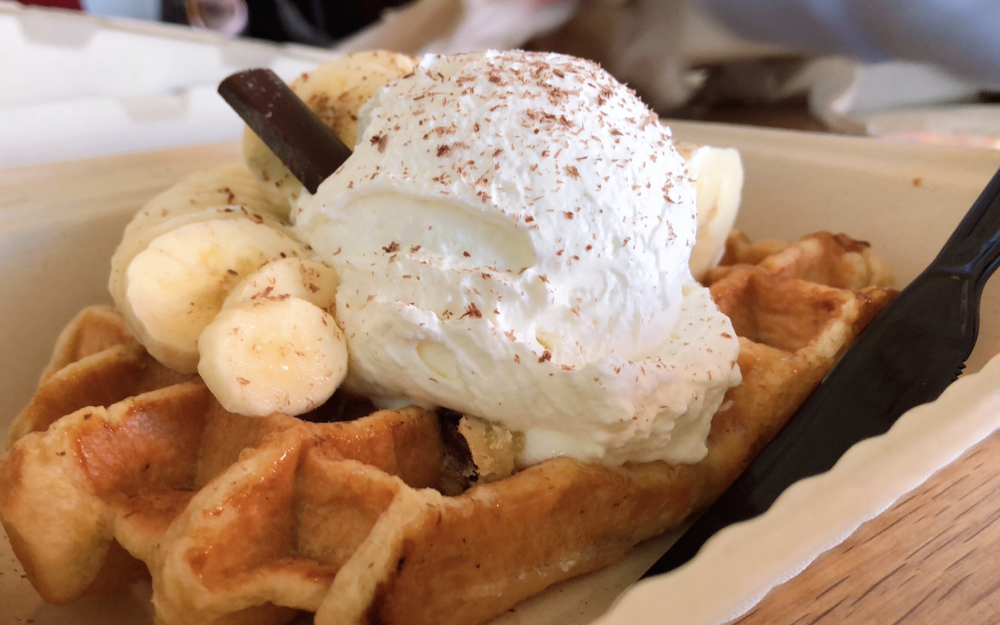
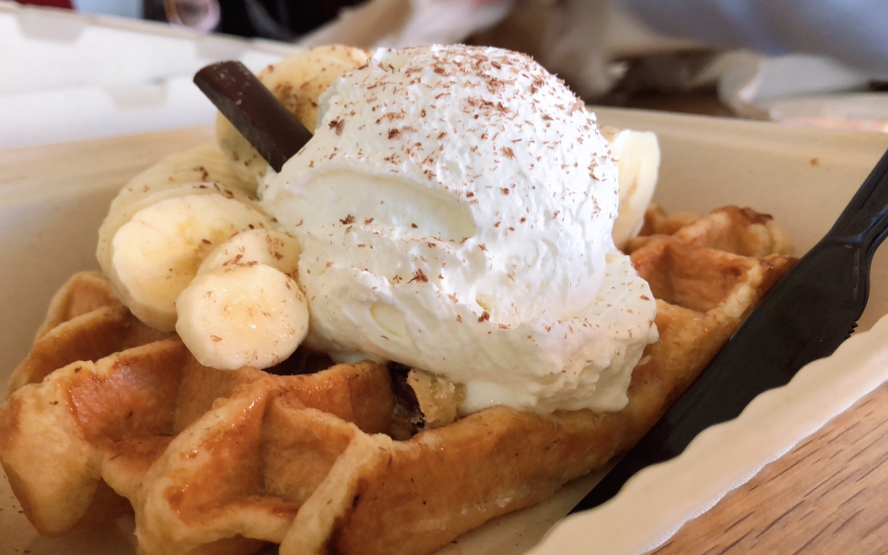

Photography
Photography is my favorite hobby because it allows me to slow down, observe the world more closely, and capture meaningful moments. It also allows me to go out frequently, relax my mood and body, and enjoy the warmth that nature brings to me.
- Equipment
- Canon EOS Rebel T7
- DJI Osmo Pocket 3
- Styles
- Portrait Photography
- Landscape Photography
- Street Photography
- Astrophotography
- Food Photography





 

Through photography, I feel that I have become a better observer of details and creative, which also helps me in my academic and professional work. Whether I am photographing people, landscapes or everyday scenes, I enjoy telling stories visually and am constantly learning new techniques to improve my photography skills.
Photography Tips
Back to Top